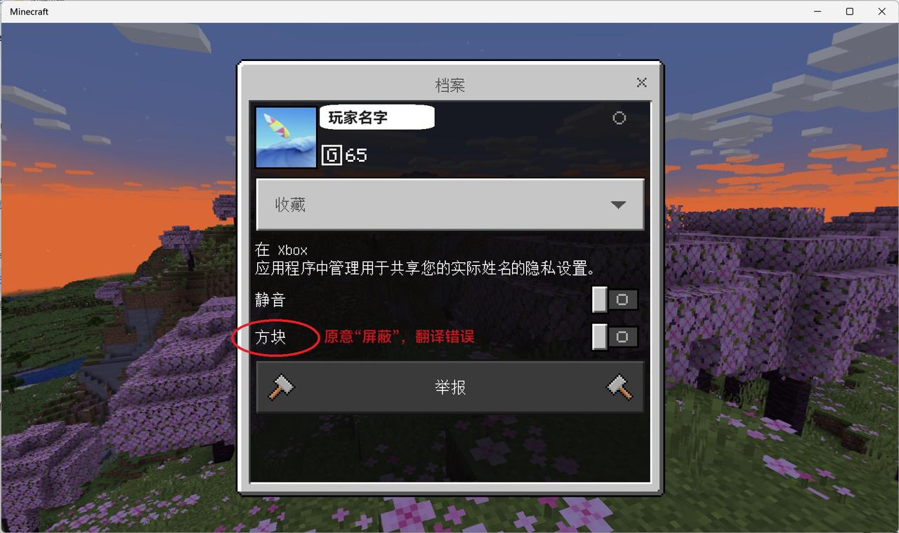

← 返回首页
# MCBE 翻译出错 第三方汉化包解决方法 <font color='#bcbcbc' size="0.8">2023/12/8 更新 </font> 近日发现，Minecraft: Bedrock Edition部分中文出现翻译问题，如：</br></br> </img></br> 而一些大佬提出了解决方案，以下为模组链接：[网站已停运，打开后自动跳转本机IP](http://127.0.0.1) Microsoft 的翻译真的会笑死人，玩家的翻译都比官方准确……无语 从 win7 用到现在的 Windows，Microsoft 最近的翻译越来越猖狂了。
评论区
评论区